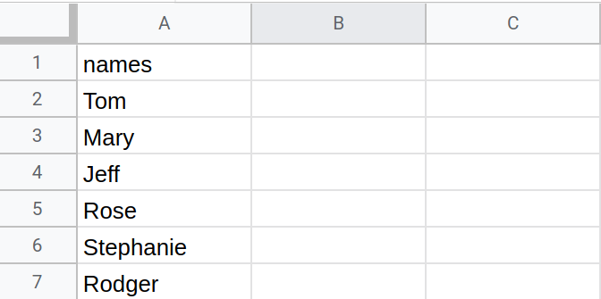

The Basics of Pandas
Contents
1.2. The Basics of Pandas#
1.2.1. How to Create a DataFrame from a Dictionary#
As we noted in the last section, we need to first import pandas. To do that we will import pandas as pd.
import pandas as pd
With pandas now loaded correctly, we can begin to work with the library. Normally, you will create a Pandas DataFrame from a CSV or some external data file. We will see examples of that below. To begin, though, let’s start with the basics. Below we have a dictionary. A good way to think of this dictionary is as an Excel Spreadsheet.

Each key in the dictionary is a column and its value is a list which contains each cell in that column. We will see an example of a two-column dataset below, but for now let’s work with the single column dataset, “names”. In this column, we have a list of 6 names.
names_dict = {"names":
[
"Tom",
"Mary",
"Jeff",
"Rose",
"Stephanie",
"Rodger"
]}
Normally in Python, we would work with this data as a dictionary. I could do something like the following to get the value of names:
print(names_dict["names"])
['Tom', 'Mary', 'Jeff', 'Rose', 'Stephanie', 'Rodger']
But this is a chapter on Pandas and DataFrames. We want to do more! We want to work strictly with our data as a DataFrame. To do that, we can use the line of code below. The pd.DataFrame() class can take numerous arguments. We won’t get into all of them right now. For now, understand that there is one essential argument that you must pass: the data that you wish to convert into a DataFrame. In our case, we will be converting the single-column dictionary into a DataFrame, so we pass that object as the only argument. We can see this in the code below.
df = pd.DataFrame(names_dict)
1.2.2. How to Display a DataFrame#
Loading the data as DataFrame is not the end of our work. It is often times essential to view that data in a Jupyter notebook or terminal. To see what it looks like, you can use the following command.
df
| names | |
|---|---|
| 0 | Tom |
| 1 | Mary |
| 2 | Jeff |
| 3 | Rose |
| 4 | Stephanie |
| 5 | Rodger |
Note that we are not printing off the data with print(). This is because we are working within a Jupyter notebook. Were we working within an IDE, such as Atom, we would need to use the following command:
print(df)
names
0 Tom
1 Mary
2 Jeff
3 Rose
4 Stephanie
5 Rodger
Notice, however, that the formatting of the data in the output is a bit different. When we print off a DataFrame, we do not see the nice formatting, such as the row highlighting and column header emboldening. It is for these reasons, that I recommend using the command “df” rather than print (df)
1.2.3. How to Save DataFrame to CSV#
Often times when you convert your data into a DataFrame, you will process it and then ultimately save it to disk. To do this, we have a few different options, such as CSV and JSON. We will meet this process with JSON a bit later. For now, let’s focus on one file type: CSV, or comma separated value. To save your DataFrame to a CSV file, you can write the following command
df.to_csv("../data/names.csv")
As we will see a little later, there are different arguments that you can pass here (and should!) For now, let’s focus on that single argument that we used: a string. This string should correspond to the file that you want to create. In this case, we are putting it into the data subfolder under the name “names.csv”.
1.2.4. How to Read DataFrame from CSV#
Now that we have the data saved to a CSV file, let’s create a new DataFrame, df2, and read that data. We can do this with the command pd.read_csv(). As with to_csv, we can pass multiple arguments here, but for now, we will stick with the one mandatory one, a string of the file that we wish to open. In this case, it is the same file we just created. Let’s open it and print it off.
df2 = pd.read_csv("../data/names.csv")
df2
| Unnamed: 0 | names | |
|---|---|---|
| 0 | 0 | Tom |
| 1 | 1 | Mary |
| 2 | 2 | Jeff |
| 3 | 3 | Rose |
| 4 | 4 | Stephanie |
| 5 | 5 | Rodger |
This doesn’t look right. Notice that this DataFrame looks a bit off from what we saved to disk. Why is that? It is because of how we saved the file. If we don’t specify an index, Pandas will automatically create one for us. In order to correctly save our file, we need to pass an extra keyword argument, specifically index=False. Let’s try and save this file again under a different name: names_no_index.csv.
df.to_csv("../data/names_no_index.csv", index=False)
Let’s create a new DataFrame, df3, and reopen and print off the data.
df3 = pd.read_csv("../data/names_no_index.csv")
df3
| names | |
|---|---|
| 0 | Tom |
| 1 | Mary |
| 2 | Jeff |
| 3 | Rose |
| 4 | Stephanie |
| 5 | Rodger |
Like magic, now we have a DataFrame that represents our original data.
1.2.5. How to Save DataFrame to JSON#
In Pandas, we are not limited to CSV files, we can do this same process with JSON files, which are JavaScript Object Notation files. These are a bit different from CSV files and are used to store more complex data, specifically data that is used on the web because all browsers can interpret JSON data off-the-shelf. To save our data to a JSON file, we can use the to_json(). Note that we are not passing the index argument here. When our data is stored as a JSON file this is not necessary.
df3.to_json("../data/names.json")
Now, let’s open that same data as a new DataFrame, df4. We can do the same thing as we did with the CSV file, except use read_json() and then print it off.
df4 = pd.read_json("../data/names.json")
df4
| names | |
|---|---|
| 0 | Tom |
| 1 | Mary |
| 2 | Jeff |
| 3 | Rose |
| 4 | Stephanie |
| 5 | Rodger |
1.2.6. How to Add a Column to the DataFrame#
When working with DataFrames, you will almost always need to manipulate the data in some way. This means adding columns, deleting columns, performing permutations on data in columns, etc. We are going to cover all these things throughout this textbook. For now, let’s start with the basics. Imagine we got the names of individuals from one source and their ages from another. We now need to add those ages into our DataFrame. We can approach the DataFrame as something like a dictionary here. We can add a column by creating it with df4["ages"]. This allows us to make that equal to the new data. The command below essentially adds a column to our DataFrame. Let’s execute the command and print it off.
df4["ages"] = [20, 26, 20, 18, 52, 40]
df4
| names | ages | |
|---|---|---|
| 0 | Tom | 20 |
| 1 | Mary | 26 |
| 2 | Jeff | 20 |
| 3 | Rose | 18 |
| 4 | Stephanie | 52 |
| 5 | Rodger | 40 |
Notice that we now have our second column. I want to stress right now, that to do this we needed data that matched the length of the names. If we tried to do this same act, but with 5 ages, rather than 6, we would have received an error.
1.2.7. How to Grab a Specific Column#
When working with a DataFrame, you will often need to grab a single column of data. To do that, we can navigate the column data rather like a Python Class. Let’s create a new object, names, and grab just the names column by stating df4.names. This command tells Pandas to grab the “names” column. Note, this is case sensitive. After we grab it, let’s print it off too.
names = df4.names
print(names)
0 Tom
1 Mary
2 Jeff
3 Rose
4 Stephanie
5 Rodger
Name: names, dtype: object
Notice that we have a lot of data here about our names. We have their index (left column of integers). At the bottom, we have the type of data that it is. Don’t worry about this extra data at the bottom for now. Let’s try and grab the ages column now.
ages = df4.ages
ages
0 20
1 26
2 20
3 18
4 52
5 40
Name: ages, dtype: int64
1.2.8. How to Convert a Column to a List#
When you are working with a DataFame, you will often times need to work with that data not as a column, rather as a list. To do this, you will want to convert that data into a list. You can do this, by calling the method .tolist() after the data in question. Let’s try it with ages and print off a list of ages.
ages_list = df4.ages.tolist()
print(ages_list)
[20, 26, 20, 18, 52, 40]
While this may not seem necessary on the surface, it is. One of the main reasons that this is essential is for processing large quantities of data. It is often times computationally less expensive to work with that data as a list or, better yet, as a NumPy array.
1.2.9. Isolating Unique Values in a Column#
We can also isolate the unique values in a column with .uniques().
unique_ages = df4.ages.unique()
print(unique_ages)
[20 26 18 52 40]
1.2.10. How to Grab a Specific Row of a DataFrame with iloc#
It will often times be necessary to grab a DataFrame by row, not column. We have a lot of different ways to grab a row, but for now let’s imagine we want to just grab a specific row by index. (We can grab all rows that have a certain value in a certain column also, but we will see that a bit later.) To grab a row by index, you can use the iloc command. This stands for Index Location. Index Location can be indexed rather like a list, as in the code below. The index you choose should correspond to the row index (starting with 0).
row1 = df4.iloc[1]
row1
names Mary
ages 26
Name: 1, dtype: object
1.2.11. Iterating over a DataFrame with df.iterrows()#
Often, we will need to iterate over an entire DataFrame. We can do that with df.iterrows() in a for loop. It is important to note that we will need two variables to do this, the index (idx) and the row (row). This will iterate down a DataFrame row by row.
for idx, row in df4.iterrows():
print(row)
names Tom
ages 20
Name: 0, dtype: object
names Mary
ages 26
Name: 1, dtype: object
names Jeff
ages 20
Name: 2, dtype: object
names Rose
ages 18
Name: 3, dtype: object
names Stephanie
ages 52
Name: 4, dtype: object
names Rodger
ages 40
Name: 5, dtype: object
We can isolate the values of each row by indexing the row at each column.
for idx, row in df4.iterrows():
print(row["names"], row["ages"])
Tom 20
Mary 26
Jeff 20
Rose 18
Stephanie 52
Rodger 40
This allows you to iterate over an entire DataFrame and isolate each row individually in a loop. As we will learn throughout this part of the textbook, we do not always need to iterate over each row to isolate specific data from a DataFrame.
1.2.12. Conclusion#
You should now feel comfortable with creating, reading, and saving DataFrames. You should also be comfortable with adding columns and indexing by rows. In the next chapters, we will dive into more complex features of DataFrames.